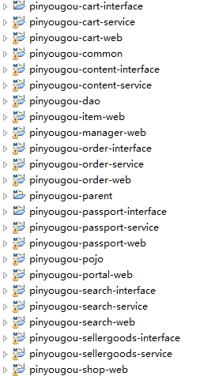

第1章 分布式框架-Dubbox课程目标1.走进电商1.1电商行业分析1.2电商行业技术特点1.3主要电商模式1.3.1 B2B--企业对企业1.3.2 C2C--个人对个人1.3.3 B2C--企业对个人1.3.4 C2B--个人对企业1.3.5 O2O--线上到线下1.3.6 F2C--工厂到个人1.3.7 B2B2C -企业-企业-个人2.品优购- 需求分析与系统设计2.1品优购简介2.1.1 网站前台2.1.2 运营商后台2.1.3 商家管理后台2.2系统架构2.2.1 什么是SOA架构2.2.2 品优购架构分析2.3数据库表结构2.4框架组合3.Dubbox框架3.1 Dubbox简介3.2注册中心Zookeeper3.2.1 Zookeeper 介绍3.2.2 Zookeeper 在Linux系统的安装3.2.3 Zookeeper 服务启动3.3 Dubbox本地 JAR包部署与安装（了解）3.4配置离线约束3.5入门小Demo3.5.1服务提供者开发3.5.2服务消费者开发3.6管理中心的部署3.6.1管理端安装3.6.2管理端使用4.品优购-框架搭建4.1工程结构分析与设计4.2创建数据库表4.3搭建框架4.3.1父工程4.3.2通用实体类模块4.3.3通用数据访问模块4.3.4通用工具类模块4.3.5商家商品服务接口模块4.3.6商家商品服务模块4.3.7运营商管理后台4.3.8商家管理后台4.4实体类与数据访问层模块4.4.1 生成代码4.4.2 拷贝代码4.4.3 修改实体类代码5.品牌列表-后端代码5.1需求分析5.2数据库表5.3后端代码5.2.1 服务层接口5.2.2 服务实现类5.2.3 控制层代码5.4测试附录：常见错误1.在注册中心找不到对应的服务2.无法连接到注册中心
第1章 分布式框架-Dubbox
课程目标
目标1：了解电商行业特点以及理解电商的模式 目标2：了解整体品优购的架构特点 目标3：能够运用Dubbox+SSM搭建分布式应用 目标4：搭建工程框架，完成品牌列表后端代码
1.走进电商
1.1电商行业分析
近年来，中国的电子商务快速发展，交易额连创新高，电子商务在各领域的应用不断拓展和深化、相关服务业蓬勃发展、支撑体系不断健全完善、创新的动力和能力 不断增强。电子商务正在与实体经济深度融合，进入规模性发展阶段，对经济社会生活的影响不断增大，正成为我国经济发展的新引擎。 中国电子商务研究中心数据显示，截止到 2012 年底，中国电子商务市场交易规模达 7.85万亿人民币，同比增长 30.83%。其中，B2B 电子商务交易额 达 6.25 万亿，同比增长 27%。而 2011 年全年，中国电子商务市场交易额达 6 万亿人民币，同比增长 33%，占 GDP 比重上升到 13%；2012 年，电子商务占 GDP 的比重已经高达 15%。
1.2电商行业技术特点
Ø 技术新 Ø 技术范围广 Ø 分布式 Ø 高并发、集群、负载均衡、高可用 Ø 海量数据 Ø 业务复杂 Ø 系统安全
1.3主要电商模式
1.3.1 B2B--企业对企业
B2B （ Business to Business）是指进行电子商务交易的供需双方都是商家（或企业、公司），她（他）们使用了互联网的技术或各种商务网络平台，完成商务交易的过程。电子商务是现代 B2B marketing的一种具体主要的表现形式。 案例：阿里巴巴、慧聪网
1.3.2 C2C--个人对个人
C2C即 Customer（Consumer） to Customer（Consumer），意思就是消费者个人间的电子商务行为。比如一个消费者有一台电脑，通过网络进行交易，把它出售给另外一个消费者，此种交易类型就称为C2C电子商务。 案例：淘宝、易趣、瓜子二手车
1.3.3 B2C--企业对个人
B2C是Business-to-Customer的缩写，而其中文简称为“商对客”。“商对客”是电子商务的一种模式，也就是通常说的直接面向消费者销售产品和服务商业零售模式。这种形式的电子商务一般以网络零售业为主，主要借助于互联网开展在线销售活动。B2C即企业通过互联网为消费者提供一个新型的购物环境——网上商店，消费者通过网络在网上购物、网上支付等消费行为。 案例：唯品会、乐蜂网
1.3.4 C2B--个人对企业
C2B（Consumer to Business，即消费者到企业），是互联网经济时代新的商业模式。这一模式改变了原有生产者（企业和机构）和消费者的关系，是一种消费者贡献价值（Create Value）， 企业和机构消费价值（Consume Value）。 C2B模式和我们熟知的供需模式（DSM, Demand Supply Model）恰恰相反，真正的C2B 应该先有消费者需求产生而后有企业生产，即先有消费者提出需求，后有生产企业按需求组织生产。通常情况为消费者根据自身需求定制产品和价格，或主动参与产品设计、生产和定价，产品、价格等彰显消费者的个性化需求，生产企业进行定制化生产。 案例：海尔商城、 尚品宅配
1.3.5 O2O--线上到线下
O2O即Online To Offline（在线离线/线上到线下），是指将线下的商务机会与互联网结合，让互联网成为线下交易的平台，这个概念最早来源于美国。O2O的概念非常广泛，既可涉及到线上，又可涉及到线下,可以通称为O2O。主流商业管理课程均对O2O这种新型的商业模式有所介绍及关注。 案例：美团、饿了吗
1.3.6 F2C--工厂到个人
F2C指的是Factory to customer，即从厂商到消费者的电子商务模式。
1.3.7 B2B2C -企业-企业-个人
B2B2C是一种电子商务类型的网络购物商业模式，B是BUSINESS的简称，C是CUSTOMER的简称，第一个B指的是商品或服务的供应商，第二个B指的是从事电子商务的企业，C则是表示消费者。 第一个BUSINESS，并不仅仅局限于品牌供应商、影视制作公司和图书出版商，任何的商品供应商或服务供应商都能可以成为第一个BUSINESS；第二B是B2B2C模式的电子商务企业，通过统一的经营管理对商品和服务、消费者终端同时进行整合，是广大供应商和消费者之间的桥梁，为供应商和消费者提供优质的服务，是互联网电子商务服务供应商。C表示消费者，在第二个B构建的统一电子商务平台购物的消费者； B2B2C的来源于目前的B2B、B2C模式的演变和完善，把B2C和C2C完美地结合起来，通过B2B2C模式的电子商务企业构建自己的物流供应链系统，提供统一的服务。 案例：京东商城、天猫商城
2.品优购- 需求分析与系统设计
2.1品优购简介
品优购网上商城是一个综合性的 B2B2C 平台，类似京东商城、天猫商城。网站采用商家入驻的模式，商家入驻平台提交申请，有平台进行资质审核，审核通过后，商家拥有独立的管理后台录入商品信息。商品经过平台审核后即可发布。 品优购网上商城主要分为网站前台、运营商后台、商家管理后台三个子系统
2.1.1 网站前台
主要包括网站首页、商家首页、商品详细页、、搜索页、会员中心、订单与支付相关页面、秒杀频道等。
2.1.2 运营商后台
是运营商的运营人员的管理后台。 主要包括商家审核、品牌管理、规格管理、模板管理、商品分类管理、商品审核、广告类型管理、广告管理、订单查询、商家结算等。
2.1.3 商家管理后台
入驻的商家进行管理的后台，主要功能是对商品的管理以及订单查询统计、资金结算等功能。
2.2系统架构
2.2.1 什么是SOA架构
SOA是Service-Oriented Architecture的首字母简称，它是一种支持面向服务的架构样式。从服务、基于服务开发和服务的结果来看，面向服务是一种思考方式。其实SOA架构更多应用于互联网项目开发。 为什么互联网项目会采用SOA架构呢？随着互联网的发展，网站应用的规模不断扩大，常规的垂直应用架构已无法应对，分布式服务架构以及流动计算架构势在必行，迫切需一个治理系统确保架构有条不紊的演进。
2.2.2 品优购架构分析
（清晰的架构图请看品优购架构图.xlsx）
2.3数据库表结构
| 表名称 | 含义 |
|---|---|
| tb_brand | 品牌 |
| tb_specification | 规格 |
| tb_specification_option | 规格选项 |
| tb_type_template | 类型模板：用于关联品牌和规格 |
| tb_item_cat | 商品分类 |
| tb_seller | 商家 |
| tb_goods | 商品 |
| tb_goods_desc | 商品详情 |
| tb_item | 商品明细 |
| tb_content | 内容（广告） |
| tb_content_category | 内容（广告）类型 |
| tb_user | 用户 |
| tb_order | 订单 |
| tb_order_item | 订单明细 |
| tb_pay_log | 支付日志 |
2.4框架组合
品优购采用当前流行的前后端编程架构。 后端框架采用Spring +SpringMVC+mybatis +Dubbox 。前端采用angularJS + Bootstrap。
3.Dubbox框架
3.1 Dubbox简介
Dubbox 是一个分布式服务框架，其前身是阿里巴巴开源项目Dubbo ，被国内电商及互联网项目中使用，后期阿里巴巴停止了该项目的维护，当当网便在Dubbo基础上进行优化，并继续维护，为了与原有的Dubbo区分，故将其命名为Dubbox。
Dubbox 致力于提供高性能和透明化的RPC远程服务调用方案，以及SOA服务治理方案。简单的说，dubbox就是个服务框架，如果没有分布式的需求，其实是不需要用的，只有在分布式的时候，才有dubbox这样的分布式服务框架的需求，并且本质上是个服务调用的东东，说白了就是个远程服务调用的分布式框架。
节点角色说明：
· Provider: 暴露服务的服务提供方。
· Consumer: 调用远程服务的服务消费方。
· Registry: 服务注册与发现的注册中心。
· Monitor: 统计服务的调用次调和调用时间的监控中心。
· Container: 服务运行容器。
调用关系说明：
· 0. 服务容器负责启动，加载，运行服务提供者。
· 1. 服务提供者在启动时，向注册中心注册自己提供的服务。
· 2. 服务消费者在启动时，向注册中心订阅自己所需的服务。
· 3. 注册中心返回服务提供者地址列表给消费者，如果有变更，注册中心将基于长连接推
送变更数据给消费者。
· 4. 服务消费者，从提供者地址列表中，基于软负载均衡算法，选一台提供者进行调用，
如果调用失败，再选另一台调用。
· 5. 服务消费者和提供者，在内存中累计调用次数和调用时间，定时每分钟发送一次统计
数据到监控中心。
3.2注册中心Zookeeper
3.2.1 Zookeeper 介绍
官方推荐使用 zookeeper 注册中心。注册中心负责服务地址的注册与查找，相当于目录服务，服务提供者和消费者只在启动时与注册中心交互，注册中心不转发请求，压力较小。 Zookeeper 是 Apacahe Hadoop 的子项目，是一个树型的目录服务，支持变更推送，适合作为Dubbox 服务的注册中心，工业强度较高，可用于生产环境。
3.2.2 Zookeeper 在Linux系统的安装
安装步骤： 第一步：安装 jdk（此步省略，我给大家提供的镜像已经安装好JDK） 第二步：把 zookeeper 的压缩包（资源\配套软件\dubbox\zookeeper-3.4.6.tar.gz）上传到 linux 系统。 Alt+P 进入SFTP ，输入put d:\zookeeper-3.4.6.tar.gz 上传 第三步：解压缩压缩包
tar -zxvf zookeeper-3.4.6.tar.gz
第四步：进入 zookeeper-3.4.6 目录，创建 data 文件夹。
xxxxxxxxxxmkdir data
第五步：进入conf目录 ，把 zoo_sample.cfg 改名为 zoo.cfg
xxxxxxxxxxcd confmv zoo_sample.cfg zoo.cfg
第六步：打开zoo.cfg , 修改 data 属性：dataDir=/root/zookeeper-3.4.6/data
3.2.3 Zookeeper 服务启动
进入bin目录，启动服务输入命令
xxxxxxxxxx./zkServer.sh start
输出以下内容表示启动成功 关闭服务输入命令
xxxxxxxxxx./zkServer.sh stop
输出以下提示信息 查看状态：
xxxxxxxxxx./zkServer.sh status
如果启动状态，提示
 如果未启动状态，提示：
如果未启动状态，提示：
3.3 Dubbox本地 JAR包部署与安装（了解）
Dubbox的jar包并没有部署到Maven的中央仓库中，大家在Maven的中央仓库中可以查找到Dubbo的最终版本是2.5.3 , 阿里巴巴解散了Dubbo团队后由当当网继续维护此项目，并改名为 Dubbox ,坐标不变，版本变更了，但是并没有提交到中央仓库。 我们现在需要手动将Dubbox的jar包安装到我的本地仓库中。 先将dubbo-2.8.4.jar包放到d:\setup, 然后输入命令
xxxxxxxxxxmvn install:install-file -Dfile=d:\setup\dubbo-2.8.4.jar -DgroupId=com.alibaba -DartifactId=dubbo -Dversion=2.8.4 -Dpackaging=jar
3.4配置离线约束
地址： http://code.alibabatech.com/schema/dubbo/dubbo.xsd
3.5入门小Demo
3.5.1服务提供者开发
开发步骤： （1）创建Maven工程（WAR）dubboxdemo-service ，在pom.xml中引入依赖
xxxxxxxxxx<project xmlns="http://maven.apache.org/POM/4.0.0" xmlns:xsi="http://www.w3.org/2001/XMLSchema-instance" xsi:schemaLocation="http://maven.apache.org/POM/4.0.0 http://maven.apache.org/xsd/maven-4.0.0.xsd"> <modelVersion>4.0.0</modelVersion> <groupId>cn.itcast.dubboxdemo</groupId> <artifactId>dubboxdemo-service</artifactId> <version>0.0.1-SNAPSHOT</version> <packaging>war</packaging> <properties> <spring.version>4.2.4.RELEASE</spring.version> </properties> <dependencies> <!-- Spring --> <dependency> <groupId>org.springframework</groupId> <artifactId>spring-context</artifactId> <version>${spring.version}</version> </dependency> <dependency> <groupId>org.springframework</groupId> <artifactId>spring-beans</artifactId> <version>${spring.version}</version> </dependency> <dependency> <groupId>org.springframework</groupId> <artifactId>spring-webmvc</artifactId> <version>${spring.version}</version> </dependency> <dependency> <groupId>org.springframework</groupId> <artifactId>spring-jdbc</artifactId> <version>${spring.version}</version> </dependency> <dependency> <groupId>org.springframework</groupId> <artifactId>spring-aspects</artifactId> <version>${spring.version}</version> </dependency> <dependency> <groupId>org.springframework</groupId> <artifactId>spring-jms</artifactId> <version>${spring.version}</version> </dependency> <dependency> <groupId>org.springframework</groupId> <artifactId>spring-context-support</artifactId> <version>${spring.version}</version> </dependency> <!-- dubbo相关 --> <dependency> <groupId>com.alibaba</groupId> <artifactId>dubbo</artifactId> <version>2.8.4</version> </dependency> <dependency> <groupId>org.apache.zookeeper</groupId> <artifactId>zookeeper</artifactId> <version>3.4.6</version> </dependency> <dependency> <groupId>com.github.sgroschupf</groupId> <artifactId>zkclient</artifactId> <version>0.1</version> </dependency> <dependency> <groupId>javassist</groupId> <artifactId>javassist</artifactId> <version>3.11.0.GA</version> </dependency> </dependencies> <build> <plugins> <plugin> <groupId>org.apache.maven.plugins</groupId> <artifactId>maven-compiler-plugin</artifactId> <version>2.3.2</version> <configuration> <source>1.7</source> <target>1.7</target> </configuration> </plugin> <plugin> <groupId>org.apache.tomcat.maven</groupId> <artifactId>tomcat7-maven-plugin</artifactId> <configuration> <!-- 指定端口 --> <port>8081</port> <!-- 请求路径 --> <path>/</path> </configuration> </plugin> </plugins> </build></project>（2）在工程的webapps下创建WEB-INF文件夹，创建web.xml
x <web-app xmlns:xsi="http://www.w3.org/2001/XMLSchema-instance" xmlns="http://java.sun.com/xml/ns/javaee" xsi:schemaLocation="http://java.sun.com/xml/ns/javaee http://java.sun.com/xml/ns/javaee/web-app_2_5.xsd" version="2.5"> <!-- 加载spring容器 --> <context-param> <param-name>contextConfigLocation</param-name> <param-value>classpath:applicationContext*.xml</param-value> </context-param> <listener> <listener-class>org.springframework.web.context.ContextLoaderListener</listener-class> </listener> </web-app>（3）创建业务接口 创建包cn.itcast.dubbodemo.service，用于存放业务接口，创建接口
xxxxxxxxxxpackage cn.itcast.dubbodemo.service;/** * 业务接口 * @author Administrator * */public interface UserService { public String getName(); }（4）创建业务实现类 创建包cn.itcast.dubbodemo.service.impl ，用于存放业务实现类。创建业务实现类：
xxxxxxxxxxpackage cn.itcast.dubbodemo.service.impl;import com.alibaba.dubbo.config.annotation.Service;import cn.itcast.dubbodemo.service.UserService;public class UserServiceImpl implements UserService { public String getName() { return "itcast"; }}注意：Service注解与原来不同，需要引入com.alibaba包下的 （5）编写配置文件 在src/main/resources下创建applicationContext-service.xml ,内容如下：
xxxxxxxxxx <beans xmlns="http://www.springframework.org/schema/beans" xmlns:xsi="http://www.w3.org/2001/XMLSchema-instance" xmlns:p="http://www.springframework.org/schema/p" xmlns:context="http://www.springframework.org/schema/context" xmlns:dubbo="http://code.alibabatech.com/schema/dubbo" xmlns:mvc="http://www.springframework.org/schema/mvc" xsi:schemaLocation="http://www.springframework.org/schema/beans http://www.springframework.org/schema/beans/spring-beans.xsd http://www.springframework.org/schema/mvc http://www.springframework.org/schema/mvc/spring-mvc.xsd http://code.alibabatech.com/schema/dubbo http://code.alibabatech.com/schema/dubbo/dubbo.xsd http://www.springframework.org/schema/context http://www.springframework.org/schema/context/spring-context.xsd"> <dubbo:application name="dubboxdemo-service"/> <dubbo:registry address="zookeeper://192.168.25.132:2181"/> <dubbo:annotation package="cn.itcast.dubboxdemo.service" /> </beans>注意：dubbo:annotation用于扫描@Service注解。 （6）测试运行 tomcat7:run
3.5.2服务消费者开发
开发步骤： （1）创建Maven工程（WAR）dubboxdemo-web ，在pom.xml引入依赖 ，同“dubboxdemo-service”工程。区别就是把tomcat插件的运行端口改为8082 。 （2）在webapps目录下创建WEB-INF 目录，并创建web.xml
xxxxxxxxxx <web-app xmlns:xsi="http://www.w3.org/2001/XMLSchema-instance" xmlns="http://java.sun.com/xml/ns/javaee" xsi:schemaLocation="http://java.sun.com/xml/ns/javaee http://java.sun.com/xml/ns/javaee/web-app_2_5.xsd" version="2.5"> <!-- 解决post乱码 --> <filter> <filter-name>CharacterEncodingFilter</filter-name> <filter-class>org.springframework.web.filter.CharacterEncodingFilter</filter-class> <init-param> <param-name>encoding</param-name> <param-value>utf-8</param-value> </init-param> <init-param> <param-name>forceEncoding</param-name> <param-value>true</param-value> </init-param> </filter> <filter-mapping> <filter-name>CharacterEncodingFilter</filter-name> <url-pattern>/*</url-pattern> </filter-mapping> <servlet> <servlet-name>springmvc</servlet-name> <servlet-class>org.springframework.web.servlet.DispatcherServlet</servlet-class> <!-- 指定加载的配置文件 ，通过参数contextConfigLocation加载--> <init-param> <param-name>contextConfigLocation</param-name> <param-value>classpath:applicationContext-web.xml</param-value> </init-param> </servlet> <servlet-mapping> <servlet-name>springmvc</servlet-name> <url-pattern>*.do</url-pattern> </servlet-mapping></web-app>（3）拷贝业务接口 将“dubboxdemo-service”工程的cn.itcast.dubboxdemo.service 包以及下面的接口拷贝至此工程。 （4）编写Controller
xxxxxxxxxxpackage cn.itcast.dubboxdemo.controller;import org.springframework.beans.factory.annotation.Autowired;import org.springframework.stereotype.Controller;import org.springframework.web.bind.annotation.RequestMapping;import org.springframework.web.bind.annotation.ResponseBody;import cn.itcast.dubbodemo.service.UserService;("/user")public class UserController { private UserService userService; ("/showName") public String showName(){ return userService.getName(); } }（5）编写spring配置文件 在src/main/resources下创建applicationContext-web.xml
xxxxxxxxxx <beans xmlns="http://www.springframework.org/schema/beans" xmlns:xsi="http://www.w3.org/2001/XMLSchema-instance" xmlns:p="http://www.springframework.org/schema/p" xmlns:context="http://www.springframework.org/schema/context" xmlns:dubbo="http://code.alibabatech.com/schema/dubbo" xmlns:mvc="http://www.springframework.org/schema/mvc" xsi:schemaLocation="http://www.springframework.org/schema/beans http://www.springframework.org/schema/beans/spring-beans.xsd http://www.springframework.org/schema/mvc http://www.springframework.org/schema/mvc/spring-mvc.xsd http://code.alibabatech.com/schema/dubbo http://code.alibabatech.com/schema/dubbo/dubbo.xsd http://www.springframework.org/schema/context http://www.springframework.org/schema/context/spring-context.xsd"> <mvc:annotation-driven > <mvc:message-converters register-defaults="false"> <bean class="org.springframework.http.converter.StringHttpMessageConverter"> <constructor-arg value="UTF-8" /> </bean> </mvc:message-converters> </mvc:annotation-driven> <!-- 引用dubbo 服务 --> <dubbo:application name="dubboxdemo-web" /> <dubbo:registry address="zookeeper://192.168.25.132:2181"/> <dubbo:annotation package="cn.itcast.dubboxdemo.controller" /></beans>（6）测试运行 tomcat7:run 在浏览器输入http://localhost:8082/user/showName.do，查看浏览器输出结果
3.6管理中心的部署
我们在开发时，需要知道注册中心都注册了哪些服务，以便我们开发和测试。我们可以通过部署一个管理中心来实现。其实管理中心就是一个web应用，部署到tomcat即可。
3.6.1管理端安装
（1）编译源码，得到war包 给大家下发的资源中有个dubbox-master.zip ，这个是dubbox的源码，我们可以使用maven命令编译源码得到“管理端”的war包 将此压缩包解压，在命令符下进入dubbo-admin目录 ，输入maven命令
xxxxxxxxxxmvn package -Dmaven.skip.test=true
如果你看到如下信息，就说明成功了 （2）进入target文件夹，你会看到一个dubbo-admin-2.8.4.war ， 在linux服务器上安装tomcat, 将此war包上传到linux服务器的tomcat的webapps下。为了访问方便，你可以把版本号去掉。 启动tomcat后自动解压。 （3）如果你部署在zookeeper同一台主机并且端口是默认的2181，则无需修改任何配置。如果不是在一台主机上或端口被修改，需要修改WEB-INF下的dubbo.properties ，修改如下配置：
xxxxxxxxxxdubbo.registry.address=zookeeper://127.0.0.1:2181
修改后重新启动tomcat
3.6.2管理端使用
（1）打开浏览器，输入http://192.168.25.132:8080/dubbo-admin/ ,登录用户名和密码均为root 进入首页。 (192.168.25.132:)是我部署的linux主机地址。 （2）启动服务提供者工程，即可在服务治理-提供者查看到该服务。 点击其中一条数据后可以查看详情。 （3）启动服务消费者工程，运行页面，观察“消费者”列表
4.品优购-框架搭建
4.1工程结构分析与设计
最终完整的工程结构如下：  工程说明： pinyougou-parent 聚合工程 pinyougou-pojo 通用实体类层 pinyougou-dao 通用数据访问层 pinyougou-xxxxx-interface 某服务层接口 pinyougou-xxxxx-service 某服务层实现 pinyougou-xxxxx-web 某web工程
4.2创建数据库表
执行资源文件夹中pinyougou-db.sql
4.3搭建框架
4.3.1父工程
创建Maven工程pinyougou-parent （POM） ，groupId 为com.pinyougou ,artifactId 为pinyougou-parent , 在pom.xml中添加锁定版本信息dependencyManagement与pluginManagement，详见“资源/配置文件/第一天搭建/父工程/pom.xml”。 以下模块均继承自此父工程
4.3.2通用实体类模块
创建通用实体类模块-pinyougou-pojo
4.3.3通用数据访问模块
创建通用数据访问模块pinyougou-dao .添加依赖Mybatis和pinyougou-pojo
xxxxxxxxxx<dependencies> <!-- Mybatis --> <dependency> <groupId>org.mybatis</groupId> <artifactId>mybatis</artifactId> </dependency> <dependency> <groupId>org.mybatis</groupId> <artifactId>mybatis-spring</artifactId> </dependency> <dependency> <groupId>com.github.miemiedev</groupId> <artifactId>mybatis-paginator</artifactId> </dependency> <!-- MySql --> <dependency> <groupId>mysql</groupId> <artifactId>mysql-connector-java</artifactId> </dependency> <!-- 连接池 --> <dependency> <groupId>com.alibaba</groupId> <artifactId>druid</artifactId> </dependency> <dependency> <groupId>com.pinyougou</groupId> <artifactId>pinyougou-pojo</artifactId> <version>0.0.1-SNAPSHOT</version> </dependency> </dependencies>将“配置文件/第一天搭建/数据访问层工程”下的配置文件拷贝到pinyougou-dao工程
4.3.4通用工具类模块
创建通用工具类模块pinyougou-common
4.3.5商家商品服务接口模块
创建maven（jar）模块pinyougou-sellergoods-interface , pom.xml添加依赖
xxxxxxxxxx<dependencies> <dependency> <groupId>com.pinyougou</groupId> <artifactId>pinyougou-pojo</artifactId> <version>0.0.1-SNAPSHOT</version> </dependency></dependencies>4.3.6商家商品服务模块
创建maven（war）模块pinyougou-sellergoods-service ，pom.xml引入依赖
xxxxxxxxxx <dependencies> <!-- Spring --> <dependency> <groupId>org.springframework</groupId> <artifactId>spring-context</artifactId> </dependency> <dependency> <groupId>org.springframework</groupId> <artifactId>spring-beans</artifactId> </dependency> <dependency> <groupId>org.springframework</groupId> <artifactId>spring-webmvc</artifactId> </dependency> <dependency> <groupId>org.springframework</groupId> <artifactId>spring-jdbc</artifactId> </dependency> <dependency> <groupId>org.springframework</groupId> <artifactId>spring-aspects</artifactId> </dependency> <dependency> <groupId>org.springframework</groupId> <artifactId>spring-jms</artifactId> </dependency> <dependency> <groupId>org.springframework</groupId> <artifactId>spring-context-support</artifactId> </dependency> <dependency> <groupId>org.springframework</groupId> <artifactId>spring-test</artifactId> </dependency> <!-- dubbo相关 --> <dependency> <groupId>com.alibaba</groupId> <artifactId>dubbo</artifactId> </dependency> <dependency> <groupId>org.apache.zookeeper</groupId> <artifactId>zookeeper</artifactId> </dependency> <dependency> <groupId>com.github.sgroschupf</groupId> <artifactId>zkclient</artifactId> </dependency> <dependency> <groupId>junit</groupId> <artifactId>junit</artifactId> </dependency> <dependency> <groupId>com.alibaba</groupId> <artifactId>fastjson</artifactId> </dependency> <dependency> <groupId>javassist</groupId> <artifactId>javassist</artifactId> </dependency> <dependency> <groupId>commons-codec</groupId> <artifactId>commons-codec</artifactId> </dependency> <dependency> <groupId>javax.servlet</groupId> <artifactId>servlet-api</artifactId> <scope>provided</scope> </dependency> <dependency> <groupId>com.pinyougou</groupId> <artifactId>pinyougou-common</artifactId> <version>0.0.1-SNAPSHOT</version> </dependency> <dependency> <groupId>com.pinyougou</groupId> <artifactId>pinyougou-dao</artifactId> <version>0.0.1-SNAPSHOT</version> </dependency> <dependency> <groupId>com.pinyougou</groupId> <artifactId>pinyougou-sellergoods-interface</artifactId> <version>0.0.1-SNAPSHOT</version> </dependency> </dependencies> <build> <plugins> <!-- 配置Tomcat插件 --> <plugin> <groupId>org.apache.tomcat.maven</groupId> <artifactId>tomcat7-maven-plugin</artifactId> <configuration> <path>/</path> <port>9001</port> </configuration> </plugin> </plugins> </build></project>在webapps下创建WEB-INF/web.xml ，加载spring容器
xxxxxxxxxx <web-app xmlns:xsi="http://www.w3.org/2001/XMLSchema-instance" xmlns="http://java.sun.com/xml/ns/javaee" xsi:schemaLocation="http://java.sun.com/xml/ns/javaee http://java.sun.com/xml/ns/javaee/web-app_2_5.xsd" version="2.5"> <!-- 加载spring容器 --> <context-param> <param-name>contextConfigLocation</param-name> <param-value>classpath*:spring/applicationContext*.xml</param-value> </context-param> <listener> <listener-class>org.springframework.web.context.ContextLoaderListener</listener-class> </listener></web-app>创建包com.pinyougou.sellergoods.service.impl 在src/main/resources下创建spring/applicationContext-service.xml
xxxxxxxxxx <beans xmlns="http://www.springframework.org/schema/beans" xmlns:xsi="http://www.w3.org/2001/XMLSchema-instance" xmlns:p="http://www.springframework.org/schema/p" xmlns:context="http://www.springframework.org/schema/context" xmlns:dubbo="http://code.alibabatech.com/schema/dubbo" xmlns:mvc="http://www.springframework.org/schema/mvc" xsi:schemaLocation="http://www.springframework.org/schema/beans http://www.springframework.org/schema/beans/spring-beans.xsd http://www.springframework.org/schema/mvc http://www.springframework.org/schema/mvc/spring-mvc.xsd http://code.alibabatech.com/schema/dubbo http://code.alibabatech.com/schema/dubbo/dubbo.xsd http://www.springframework.org/schema/context http://www.springframework.org/schema/context/spring-context.xsd"> <dubbo:protocol name="dubbo" port="20881"></dubbo:protocol> <dubbo:application name="pinyougou-sellergoods-service"/> <dubbo:registry address="zookeeper://192.168.25.129:2181"/><dubbo:annotation package="com.pinyougou.sellergoods.service.impl" /> </beans>4.3.7运营商管理后台
创建maven（war）模块pinyougou-manager-web ， pom.xml引入依赖
xxxxxxxxxx <dependencies> <!-- Spring --> <dependency> <groupId>org.springframework</groupId> <artifactId>spring-context</artifactId> </dependency> <dependency> <groupId>org.springframework</groupId> <artifactId>spring-beans</artifactId> </dependency> <dependency> <groupId>org.springframework</groupId> <artifactId>spring-webmvc</artifactId> </dependency> <dependency> <groupId>org.springframework</groupId> <artifactId>spring-jdbc</artifactId> </dependency> <dependency> <groupId>org.springframework</groupId> <artifactId>spring-aspects</artifactId> </dependency> <dependency> <groupId>org.springframework</groupId> <artifactId>spring-jms</artifactId> </dependency> <dependency> <groupId>org.springframework</groupId> <artifactId>spring-context-support</artifactId> </dependency> <dependency> <groupId>org.springframework</groupId> <artifactId>spring-test</artifactId> </dependency> <!-- dubbo相关 --> <dependency> <groupId>com.alibaba</groupId> <artifactId>dubbo</artifactId> </dependency> <dependency> <groupId>org.apache.zookeeper</groupId> <artifactId>zookeeper</artifactId> </dependency> <dependency> <groupId>com.github.sgroschupf</groupId> <artifactId>zkclient</artifactId> </dependency> <dependency> <groupId>junit</groupId> <artifactId>junit</artifactId> </dependency> <dependency> <groupId>com.alibaba</groupId> <artifactId>fastjson</artifactId> </dependency> <dependency> <groupId>javassist</groupId> <artifactId>javassist</artifactId> </dependency> <dependency> <groupId>commons-codec</groupId> <artifactId>commons-codec</artifactId> </dependency> <dependency> <groupId>javax.servlet</groupId> <artifactId>servlet-api</artifactId> <scope>provided</scope> </dependency> <dependency> <groupId>com.pinyougou</groupId> <artifactId>pinyougou-common</artifactId> <version>0.0.1-SNAPSHOT</version> </dependency> <dependency> <groupId>com.pinyougou</groupId> <artifactId>pinyougou-sellergoods-interface</artifactId> <version>0.0.1-SNAPSHOT</version> </dependency> </dependencies> <build> <plugins> <!-- 配置Tomcat插件 --> <plugin> <groupId>org.apache.tomcat.maven</groupId> <artifactId>tomcat7-maven-plugin</artifactId> <configuration> <path>/</path> <port>9101</port> </configuration> </plugin> </plugins> </build>在webapps下创建WEB-INF/web.xml ，加载spring容器
xxxxxxxxxx <web-app xmlns:xsi="http://www.w3.org/2001/XMLSchema-instance" xmlns="http://java.sun.com/xml/ns/javaee" xsi:schemaLocation="http://java.sun.com/xml/ns/javaee http://java.sun.com/xml/ns/javaee/web-app_2_5.xsd" version="2.5"> <!-- 解决post乱码 --> <filter> <filter-name>CharacterEncodingFilter</filter-name> <filter-class>org.springframework.web.filter.CharacterEncodingFilter</filter-class> <init-param> <param-name>encoding</param-name> <param-value>utf-8</param-value> </init-param> <init-param> <param-name>forceEncoding</param-name> <param-value>true</param-value> </init-param> </filter> <filter-mapping> <filter-name>CharacterEncodingFilter</filter-name> <url-pattern>/*</url-pattern> </filter-mapping> <servlet> <servlet-name>springmvc</servlet-name> <servlet-class>org.springframework.web.servlet.DispatcherServlet</servlet-class> <!-- 指定加载的配置文件 ，通过参数contextConfigLocation加载--> <init-param> <param-name>contextConfigLocation</param-name> <param-value>classpath:spring/springmvc.xml</param-value> </init-param> </servlet> <servlet-mapping> <servlet-name>springmvc</servlet-name> <url-pattern>*.do</url-pattern> </servlet-mapping></web-app>创建包com.pinyougou.manager.controller 在src/main/resources下创建spring/springmvc.xml
xxxxxxxxxx <beans xmlns="http://www.springframework.org/schema/beans" xmlns:xsi="http://www.w3.org/2001/XMLSchema-instance" xmlns:p="http://www.springframework.org/schema/p" xmlns:context="http://www.springframework.org/schema/context" xmlns:dubbo="http://code.alibabatech.com/schema/dubbo" xmlns:mvc="http://www.springframework.org/schema/mvc" xsi:schemaLocation="http://www.springframework.org/schema/beans http://www.springframework.org/schema/beans/spring-beans.xsd http://www.springframework.org/schema/mvc http://www.springframework.org/schema/mvc/spring-mvc.xsd http://code.alibabatech.com/schema/dubbo http://code.alibabatech.com/schema/dubbo/dubbo.xsd http://www.springframework.org/schema/context http://www.springframework.org/schema/context/spring-context.xsd"> <mvc:annotation-driven> <mvc:message-converters register-defaults="true"> <bean class="com.alibaba.fastjson.support.spring.FastJsonHttpMessageConverter"> <property name="supportedMediaTypes" value="application/json"/> <property name="features"> <array> <value>WriteMapNullValue</value> <value>WriteDateUseDateFormat</value> </array> </property> </bean> </mvc:message-converters> </mvc:annotation-driven> <!-- 引用dubbo 服务 --> <dubbo:application name="pinyougou-manager-web" /> <dubbo:registry address="zookeeper://192.168.25.132:2181"/> <dubbo:annotation package="com.pinyougou.manager.controller" /> </beans>4.3.8商家管理后台
构建web模块pinyougou-shop-web 与运营商管理后台的构建方式类似。区别： （1）定义tomcat的启动端口为9102 （2）springmvc.xml
xxxxxxxxxx <!-- 引用dubbo 服务 --> <dubbo:application name="pinyougou-shop-web" /> <dubbo:registry address="zookeeper://192.168.25.132:2181"/> <dubbo:annotation package="com.pinyougou.shop.controller" /> 4.4实体类与数据访问层模块
4.4.1 生成代码
利用反向工程generatorSqlmapCustom实现实体类与数据访问层代码的自动生成
4.4.2 拷贝代码
将com.pinyougou.pojo包拷贝到pojo工程 将com.pinyougou.mapper包和resouce下的com.pinyougou.mapper文件夹拷贝到dao工程
4.4.3 修改实体类代码
修改每个实体类，让其实现Serializable接口
5.品牌列表-后端代码
5.1需求分析
完成品牌管理的后端代码，在浏览器可查询品牌的数据（json格式）
5.2数据库表
tb_brand 品牌表
| 字段 | 类型 | 长度 | 含义 |
|---|---|---|---|
| Id | Bigint | 主键 | |
| Name | Varchar | 255 | 品牌名称 |
| First_char | Varchar | 1 | 品牌首字母 |
5.3后端代码
5.2.1 服务层接口
在pinyougou-sellergoods-interface 工程创建BrandService接口
xxxxxxxxxxpackage com.pinyougou.sellergoods.service;import java.util.List;import com.pinyougou.pojo.TbBrand;/** * 品牌服务层接口 * @author Administrator * */public interface BrandService { /** * 返回全部列表 * @return */ public List<TbBrand> findAll();}5.2.2 服务实现类
在pinyougou-sellergoods-service 工程创建BrandServiceImpl类
xxxxxxxxxxpackage com.pinyougou.sellergoods.service.impl;import java.util.List;import org.springframework.beans.factory.annotation.Autowired;import com.alibaba.dubbo.config.annotation.Service;import com.pinyougou.mapper.TbBrandMapper;import com.pinyougou.pojo.TbBrand;import com.pinyougou.sellergoods.service.BrandService;public class BrandServiceImpl implements BrandService { private TbBrandMapper brandMapper; public List<TbBrand> findAll() { return brandMapper.selectByExample(null); }}5.2.3 控制层代码
在pinyougou-manager-web工程创建com.pinyougou.manager.controller包，包下创建BrandController类
xxxxxxxxxxpackage com.pinyougou.manager.controller;import java.util.List;import org.springframework.web.bind.annotation.RequestMapping;import org.springframework.web.bind.annotation.RestController;import com.alibaba.dubbo.config.annotation.Reference;import com.pinyougou.pojo.TbBrand;import com.pinyougou.sellergoods.service.BrandService;/** * 品牌controller * @author Administrator */("/brand")public class BrandController { private BrandService brandService; /** * 返回全部列表 * @return */ ("/findAll") public List<TbBrand> findAll(){ return brandService.findAll(); }}5.4测试
启动pinyougou-sellergoods-service
启动pinyougou-manager-web
地址栏输入http://localhost:9101/brand/findAll.do
可以看到浏览器输出了json数据。
附录：常见错误
1.在注册中心找不到对应的服务
xxxxxxxxxxjava.lang.IllegalStateException: Failed to check the status of the service com.pinyougou.sellergoods.service.BrandService. No provider available for the service com.pinyougou.sellergoods.service.BrandService from the url zookeeper://192.168.25.129:2181/com.alibaba.dubbo.registry.RegistryService?application=pinyougou-manager-web&dubbo=2.8.4&interface=com.pinyougou.sellergoods.service.BrandService&methods=update,get,delete,selectOptionList,add,getListByPage&pid=3980&revision=0.0.1-SNAPSHOT&side=consumer×tamp=1501146823396 to the consumer 172.16.17.14 use dubbo version 2.8.4
这种错误是服务层代码没有成功注册到注册中心导致，请检查一下你的服务层代码是否添加了@service注解，并且该注解的包一定是com.alibaba.dubbo.config.annotation包，不是org.springframework.stereotype.Service，这个地方极容易出错。另外还有一个原因就是你的服务层工程由于某些原因没有正常启动，也无法注册到注册中心里。
2.无法连接到注册中心
xxxxxxxxxxorg.I0Itec.zkclient.exception.ZkTimeoutException: Unable to connect to zookeeper server within timeout: 5000 org.I0Itec.zkclient.ZkClient.connect(ZkClient.java:876) org.I0Itec.zkclient.ZkClient.<init>(ZkClient.java:98) org.I0Itec.zkclient.ZkClient.<init>(ZkClient.java:92) org.I0Itec.zkclient.ZkClient.<init>(ZkClient.java:80)com.alibaba.dubbo.remoting.zookeeper.zkclient.ZkclientZookeeperClient.<init>(ZkclientZookeeperClient.java:26)
请检查IP与端口是否填写正确，检查注册中心是否正常启动